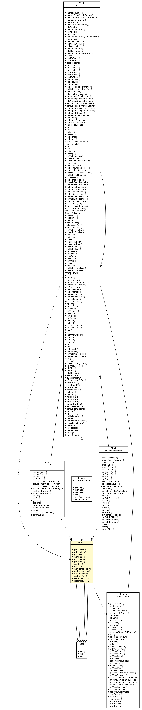

edu.umd.cs.piccolo.util
Class PPaintContext

java.lang.Object
 edu.umd.cs.piccolo.util.PPaintContext
edu.umd.cs.piccolo.util.PPaintContext
public class PPaintContext
- extends Object
PPaintContext is used by piccolo nodes to paint themselves on the screen.
PPaintContext wraps a Graphics2D to implement painting.
| Methods inherited from class java.lang.Object |
clone, equals, finalize, getClass, hashCode, notify, notifyAll, toString, wait, wait, wait |
LOW_QUALITY_RENDERING
public static final int LOW_QUALITY_RENDERING
- See Also:
- Constant Field Values
HIGH_QUALITY_RENDERING
public static final int HIGH_QUALITY_RENDERING
- See Also:
- Constant Field Values
RENDER_QUALITY_LOW_FRC
public static FontRenderContext RENDER_QUALITY_LOW_FRC
RENDER_QUALITY_HIGH_FRC
public static FontRenderContext RENDER_QUALITY_HIGH_FRC
CURRENT_PAINT_CONTEXT
public static PPaintContext CURRENT_PAINT_CONTEXT
compositeStack
protected PStack compositeStack
clipStack
protected PStack clipStack
localClipStack
protected PStack localClipStack
cameraStack
protected PStack cameraStack
transformStack
protected PStack transformStack
renderQuality
protected int renderQuality
PPaintContext
public PPaintContext(Graphics2D aGraphics)
getGraphics
public Graphics2D getGraphics()
getLocalClip
public Rectangle2D getLocalClip()
getScale
public double getScale()
pushCamera
public void pushCamera(PCamera aCamera)
popCamera
public void popCamera(PCamera aCamera)
getCamera
public PCamera getCamera()
pushClip
public void pushClip(Shape aClip)
popClip
public void popClip(Shape aClip)
pushTransparency
public void pushTransparency(float transparency)
popTransparency
public void popTransparency(float transparency)
pushTransform
public void pushTransform(PAffineTransform aTransform)
popTransform
public void popTransform(PAffineTransform aTransform)
getRenderQuality
public int getRenderQuality()
- Return the render quality used by this paint context.
setRenderQuality
public void setRenderQuality(int requestedQuality)
- Set the rendering hints for this paint context. The render quality is most
often set by the rendering PCanvas. Use PCanvas.setRenderQuality() and
PCanvas.setInteractingRenderQuality() to set these values.
- Parameters:
requestedQuality - supports PPaintContext.HIGH_QUALITY_RENDERING or PPaintContext.LOW_QUALITY_RENDERING